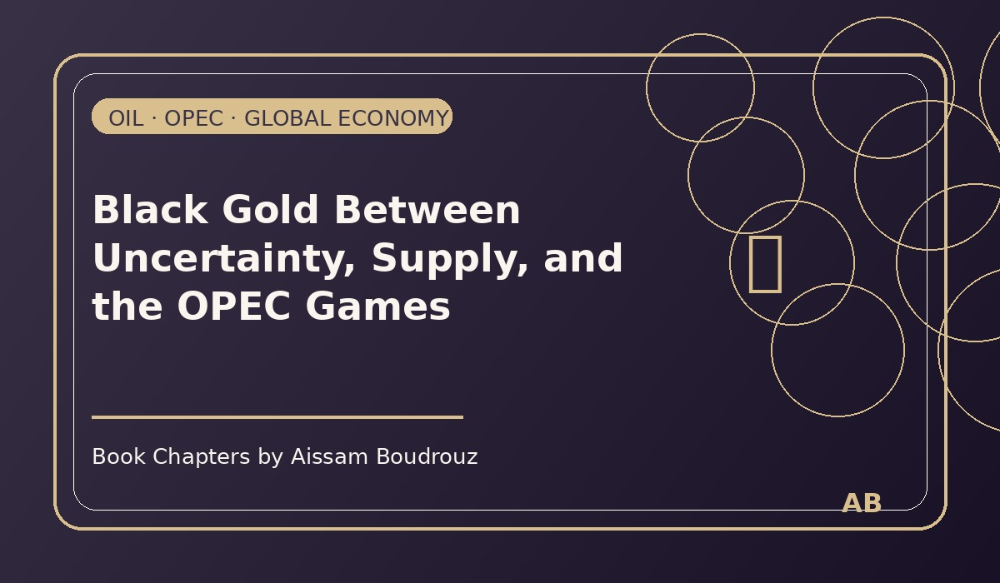

Black Gold Between Uncertainty, Supply, and the OPEC Games
It was November 2021, just as the world was starting to breathe again after almost two years of lockdowns. Airports were reopening, lights were coming back on in cafés, and traffic — that endless soundtrack of life — was back in full force.
And with that return came something else: the rise of oil prices.
Every day, the headlines spoke about new highs — prices reaching levels not seen since 2018, even 2015. For a world trying to recover, that was not good news.
But deep down, as an economist, I knew this rise was not random. It was the natural response to years of imbalance between supply and demand.
After the storm
For almost two years, the oil market had been on a roller coaster. During the pandemic, demand fell faster than anyone could have imagined. Factories stopped, planes grounded, cars parked — the world simply paused.
Oil prices collapsed, reaching $18 a barrel, and then — unbelievably — below zero in April 2020. (Yes, that strange story where producers had to pay people to take their oil — I already told you about that one in the previous chapter.)
But by late 2021, life was returning. People were driving again, traveling again, buying again. Demand was recovering — and the world expected supply to follow.
Everyone thought balance would return by January 2022.
Enter OPEC: the masters of the game
Then came November 4th, 2021. The Organization of Petroleum Exporting Countries — OPEC — held a meeting that everyone was watching.
Countries like Saudi Arabia and Russia, the heavyweights of oil production, decided not to increase their output — even though demand was rising fast.
It was a strategic move. The U.S. and Japan were pushing hard, asking OPEC to pump more oil to ease global prices. But OPEC, as usual, played its own game — calm, patient, confident.
That decision sent prices even higher, and it reminded me of an old truth: the oil market isn't just about economics — it's about power.
The silent chessboard
The United States, though a major producer thanks to shale oil, still relies on global prices. When Trump was in power, he would simply call Saudi Arabia directly, publicly demanding more production. Biden, on the other hand, had to play diplomacy — quieter, slower, less theatrical.
So, while politicians exchanged polite statements, millions of people around the world watched fuel prices climb again. And once again, oil reminded us who still rules the economy.
OPEC's message was clear: "We control the tap. We open it when we want. We close it when we must."
The bigger question
That night, I sat at my desk and asked myself a simple question: How long will the global economy keep dancing to the rhythm of oil?
We talk about renewable energy — solar, wind, even nuclear — but together they still make up barely 10% of the world's total energy mix. The rest still depends on oil and gas — black gold.
And the logic is simple: demand for oil is driven by two main forces — the global population, which keeps growing, and renewable energy, which grows slowly but still can't replace fossil fuels. As long as more people are born than solar panels are built, the equation stays tilted in oil's favor.
Between hope and habit
So, we keep driving, producing, and consuming — hoping for greener energy, but still running on black gold. OPEC knows it, markets know it, and deep down, we all do too.
The world says it wants clean energy, but every time oil prices rise, we panic — as if our hearts were still pumping petroleum.
Maybe one day, we'll look back at this time as the last era of dependence — but for now, OPEC still holds the remote, and the rest of us are just watching the screen. 🛢️
← Back to Articles